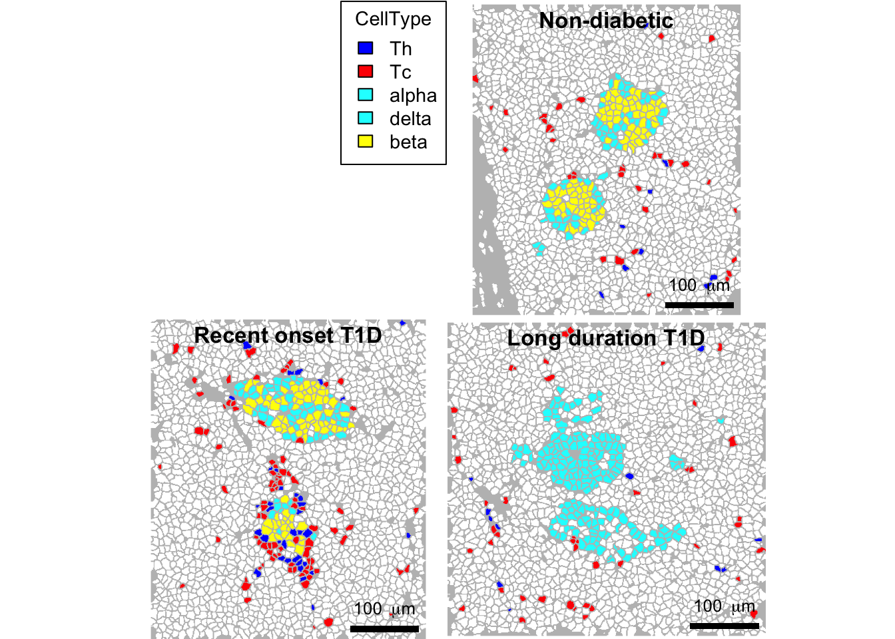
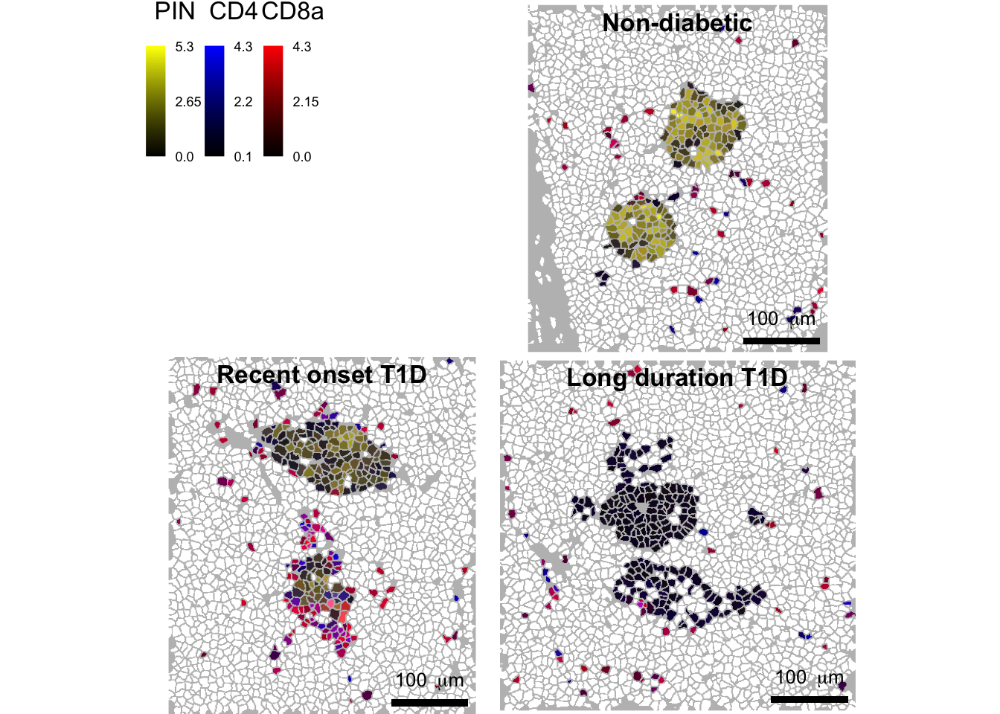
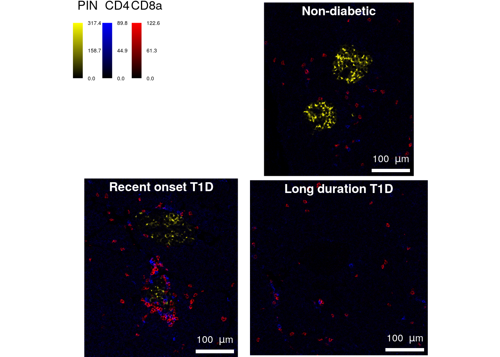

Last updated: 2020-07-08
Checks: 7 0
Knit directory: cytomapper_publication/
This reproducible R Markdown analysis was created with workflowr (version 1.6.2). The Checks tab describes the reproducibility checks that were applied when the results were created. The Past versions tab lists the development history.
Great! Since the R Markdown file has been committed to the Git repository, you know the exact version of the code that produced these results.
Great job! The global environment was empty. Objects defined in the global environment can affect the analysis in your R Markdown file in unknown ways. For reproduciblity it’s best to always run the code in an empty environment.
The command set.seed(20200602) was run prior to running the code in the R Markdown file. Setting a seed ensures that any results that rely on randomness, e.g. subsampling or permutations, are reproducible.
Great job! Recording the operating system, R version, and package versions is critical for reproducibility.
Nice! There were no cached chunks for this analysis, so you can be confident that you successfully produced the results during this run.
Great job! Using relative paths to the files within your workflowr project makes it easier to run your code on other machines.
Great! You are using Git for version control. Tracking code development and connecting the code version to the results is critical for reproducibility.
The results in this page were generated with repository version b0e748f. See the Past versions tab to see a history of the changes made to the R Markdown and HTML files.
Note that you need to be careful to ensure that all relevant files for the analysis have been committed to Git prior to generating the results (you can use wflow_publish or wflow_git_commit). workflowr only checks the R Markdown file, but you know if there are other scripts or data files that it depends on. Below is the status of the Git repository when the results were generated:
Ignored files:
Ignored: .DS_Store
Ignored: .Rhistory
Ignored: .Rproj.user/
Ignored: analysis/.DS_Store
Ignored: data/PancreasData/.DS_Store
Ignored: data/PancreasData/pancreas_images.rds
Ignored: data/PancreasData/pancreas_masks.rds
Ignored: data/PancreasData/pancreas_sce.rds
Unstaged changes:
Modified: .gitignore
Modified: analysis/_site.yml
Deleted: analysis/about.Rmd
Deleted: analysis/license.Rmd
Note that any generated files, e.g. HTML, png, CSS, etc., are not included in this status report because it is ok for generated content to have uncommitted changes.
These are the previous versions of the repository in which changes were made to the R Markdown (analysis/03-Figure_2.Rmd) and HTML (docs/03-Figure_2.html) files. If you’ve configured a remote Git repository (see ?wflow_git_remote), click on the hyperlinks in the table below to view the files as they were in that past version.
| File | Version | Author | Date | Message |
|---|---|---|---|---|
| Rmd | cb92024 | nilseling | 2020-07-03 | Finalized Figure 4 |
| Rmd | 36debd1 | nilseling | 2020-07-03 | Split analysis into individual scripts per figure |
This script reproduces the analysis performed in Figure 2. Here, we will load the libraries required for data analysis:
library(dplyr)
library(SingleCellExperiment)
library(cytomapper)The previous scripts have generated the following files in the data/PancreasData folder:
SingleCellExperiment object containing the cell- and marker-specific expression and metadata.CytoImageList object containing 100 example images of 3 donors, where each image contains 38 channelsCytoImageList object containing 100 example masks, which are associated to and a segmentation result of the images in 2.Here, we will load all relevant libraries and read in the data.
sce <- readRDS("data/PancreasData/pancreas_sce.rds")
images <- readRDS("data/PancreasData/pancreas_images.rds")
masks <- readRDS("data/PancreasData/pancreas_masks.rds")In type 1 diabetes (T1D), pancreatic insulin-producing beta cells are killed by self-reacting immune cells. Here, we will visualize association between T cells and beta cells in three pancreas donors at different stage of the disease (Non-diabetic, recent onset T1D and long duration T1D).
In our dataset, cell types can be visualized in the CellType column of colData(sce) (unique(colData(sce)$CellType)). T cells have the cell type Tc (CD8+) or Th (CD4+) and beta cells are labelled as beta.
First, we will select for each donor the image with the highest density of T cells (number of T cells per mm^2). Then, we will subset the SingleCellExperiment object (sce) and the CytoImageList objects (images and masks).
# Select the three images with the higest T cell density
selected.images <- as_tibble(colData(sce)) %>%
# Calculate for each image the area, number of T cells and T cell density
group_by(ImageNumber) %>%
mutate(ImageArea = (width * height) / 10^6,
TcellCount = sum(CellType == "Tc" | CellType == "Th"),
TcellDensity = TcellCount / ImageArea) %>%
ungroup() %>%
# Select for each disease stage the image with the highest T cell density
group_by(stage) %>%
dplyr::slice(which.max(TcellDensity)) %>%
pull(ImageName)
print(selected.images)[1] "J01" "E30" "G23"# Subset the objects
cur_sce <- sce[, sce$ImageName %in% selected.images]
cur_images <- images[mcols(images)$ImageName %in% selected.images]
cur_masks <- masks[mcols(masks)$ImageName %in% selected.images]To visualize association between islet and T cells, we will use the plotCells function and display beta and T cells on the three images selected above.
The different cell types will be coloured as following: Tc cells in red, Th cells in blue, beta cells in yellow, the other islet cells (alpha, delta) in cyan and the rest of the cells in black.
To display only a selected number of cells, the SingleCellExperiment can be subsetted.
cur_sce <- cur_sce[,cur_sce$CellType %in% c("beta", "alpha", "delta", "Tc", "Th")]
# Define the colors for the different cell types
ct_colours <- vector(mode = "character", length = length(unique(cur_sce$CellType)))
names(ct_colours) <- unique(cur_sce$CellType)
ct_colours["beta"] <- "yellow"
ct_colours[c("alpha", "delta")] <- "cyan"
ct_colours["Tc"] <- "red"
ct_colours["Th"] <- "blue"
# Plot the cells
plotCells(mask = cur_masks,
object = cur_sce,
cell_id = "CellNumber",
img_id = "ImageName",
colour_by = "CellType",
colour = list(CellType = ct_colours),
image_title = list(text = c("Non-diabetic",
"Recent onset T1D",
"Long duration T1D"),
colour = "black"),
scale_bar = list(length = 100,
label = expression("100 " ~ mu * "m"),
colour = "black"),
missing_colour = "white",
background_colour = "gray")
# Save figure
plotCells(mask = cur_masks,
object = cur_sce,
cell_id = "CellNumber",
img_id = "ImageName",
colour_by = "CellType",
colour = list(CellType = ct_colours),
image_title = list(text = c("Non-diabetic",
"Recent onset T1D",
"Long duration T1D"),
colour = "black"),
scale_bar = list(length = 100,
label = expression("100 " ~ mu * "m"),
colour = "black"),
missing_colour = "white",
background_colour = "gray",
save_plot = list(filename = "docs/final_figures/main/Fig_2A.png", scale = 3))We now see that T cells are located closer to the islet on the “Recent onset T1D” image. In addition, no beta cells are visible on the “Long duration T1D” image, as expected because they have been destroyed by the immune system.
We will now confirm that this is reflected on the original images by (i) plotting the corresponding expression values on the mask using the plotCells function and (ii) plotting the pixel-level data with the plotPixels function. CD4 (CD4 expressed by Th cells) will be plotted in blue, CD8 (CD8a, Tc cells) in red and proinsulin (PIN, beta cells) in yellow.
First, we will plot the arcsinh-transformed averaged expression on the images.
plotCells(mask = cur_masks,
object = cur_sce,
cell_id = "CellNumber",
img_id = "ImageName",
exprs_values = "exprs",
colour_by = c("PIN", "CD4", "CD8a"),
colour = list(PIN = c("black", "yellow"),
CD4 = c("black", "blue"),
CD8a = c("black", "red")),
image_title = list(text = c("Non-diabetic",
"Recent onset T1D",
"Long duration T1D"),
colour = "black"),
scale_bar = list(length = 100,
label = expression("100 " ~ mu * "m"),
colour = "black"),
missing_colour = "white",
background_colour = "gray")
# Save figure
plotCells(mask = cur_masks,
object = cur_sce,
cell_id = "CellNumber",
img_id = "ImageName",
exprs_values = "exprs",
colour_by = c("PIN", "CD4", "CD8a"),
colour = list(PIN = c("black", "yellow"),
CD4 = c("black", "blue"),
CD8a = c("black", "red")),
image_title = list(text = c("Non-diabetic",
"Recent onset T1D",
"Long duration T1D"),
colour = "black"),
scale_bar = list(length = 100,
label = expression("100 " ~ mu * "m"),
colour = "black"),
missing_colour = "white",
background_colour = "gray",
save_plot = list(filename = "docs/final_figures/main/Fig_2B.png", scale = 3))Finally, we will display the pixel-level information on the images.
plotPixels(image = cur_images,
cell_id = "CellNumber",
img_id = "ImageName",
colour_by = c("PIN", "CD4", "CD8a"),
colour = list(PIN = c("black", "yellow"),
# SYP = c("black", "cyan"),
CD4 = c("black", "blue"),
CD8a = c("black", "red")),
bcg = list(PIN = c(0, 4, 1),
# SYP = c(0, 3, 1),
CD4 = c(0, 3, 1),
CD8a = c(0, 3, 1)),
image_title = list(text = c("Non-diabetic",
"Recent onset T1D",
"Long duration T1D")),
scale_bar = list(length = 100,
label = expression("100 " ~ mu * "m")))
# Save figure
plotPixels(image = cur_images,
cell_id = "CellNumber",
img_id = "ImageName",
colour_by = c("PIN", "CD4", "CD8a"),
colour = list(PIN = c("black", "yellow"),
# SYP = c("black", "cyan"),
CD4 = c("black", "blue"),
CD8a = c("black", "red")),
bcg = list(PIN = c(0, 4, 1),
# SYP = c(0, 3, 1),
CD4 = c(0, 3, 1),
CD8a = c(0, 3, 1)),
image_title = list(text = c("Non-diabetic",
"Recent onset T1D",
"Long duration T1D")),
scale_bar = list(length = 100,
label = expression("100 " ~ mu * "m")),
save_plot = list(filename = "docs/final_figures/main/Fig_2C.png", scale = 3))This plot confirms that beta cells are surrounded by infiltrating T cells on the “Recent onset T1D” image. In addition, proinsulin abundance seems to be reduced on that image as compared to the “Non-diabetic” control image. This observation can be further explored by performing additional data analysis.
sessionInfo()R version 4.0.0 (2020-04-24)
Platform: x86_64-apple-darwin17.0 (64-bit)
Running under: macOS Catalina 10.15.5
Matrix products: default
BLAS: /Library/Frameworks/R.framework/Versions/4.0/Resources/lib/libRblas.dylib
LAPACK: /Library/Frameworks/R.framework/Versions/4.0/Resources/lib/libRlapack.dylib
locale:
[1] en_US.UTF-8/en_US.UTF-8/en_US.UTF-8/C/en_US.UTF-8/en_US.UTF-8
attached base packages:
[1] parallel stats4 stats graphics grDevices utils datasets
[8] methods base
other attached packages:
[1] cytomapper_1.1.1 EBImage_4.30.0
[3] SingleCellExperiment_1.10.1 SummarizedExperiment_1.18.1
[5] DelayedArray_0.14.0 matrixStats_0.56.0
[7] Biobase_2.48.0 GenomicRanges_1.40.0
[9] GenomeInfoDb_1.24.2 IRanges_2.22.2
[11] S4Vectors_0.26.1 BiocGenerics_0.34.0
[13] dplyr_1.0.0 workflowr_1.6.2
loaded via a namespace (and not attached):
[1] Rcpp_1.0.4.6 locfit_1.5-9.4 lattice_0.20-41
[4] fftwtools_0.9-8 png_0.1-7 rprojroot_1.3-2
[7] digest_0.6.25 R6_2.4.1 tiff_0.1-5
[10] backports_1.1.7 evaluate_0.14 ggplot2_3.3.1
[13] pillar_1.4.4 zlibbioc_1.34.0 rlang_0.4.6
[16] whisker_0.4 raster_3.1-5 Matrix_1.2-18
[19] rmarkdown_2.2 stringr_1.4.0 htmlwidgets_1.5.1
[22] munsell_0.5.0 RCurl_1.98-1.2 compiler_4.0.0
[25] httpuv_1.5.4 xfun_0.14 pkgconfig_2.0.3
[28] htmltools_0.4.0 tidyselect_1.1.0 gridExtra_2.3
[31] tibble_3.0.1 GenomeInfoDbData_1.2.3 codetools_0.2-16
[34] viridisLite_0.3.0 crayon_1.3.4 later_1.1.0.1
[37] bitops_1.0-6 grid_4.0.0 gtable_0.3.0
[40] lifecycle_0.2.0 git2r_0.27.1 magrittr_1.5
[43] scales_1.1.1 stringi_1.4.6 XVector_0.28.0
[46] viridis_0.5.1 fs_1.4.1 promises_1.1.1
[49] sp_1.4-2 ellipsis_0.3.1 generics_0.0.2
[52] vctrs_0.3.1 RColorBrewer_1.1-2 tools_4.0.0
[55] glue_1.4.1 purrr_0.3.4 jpeg_0.1-8.1
[58] abind_1.4-5 yaml_2.2.1 colorspace_1.4-1
[61] knitr_1.28